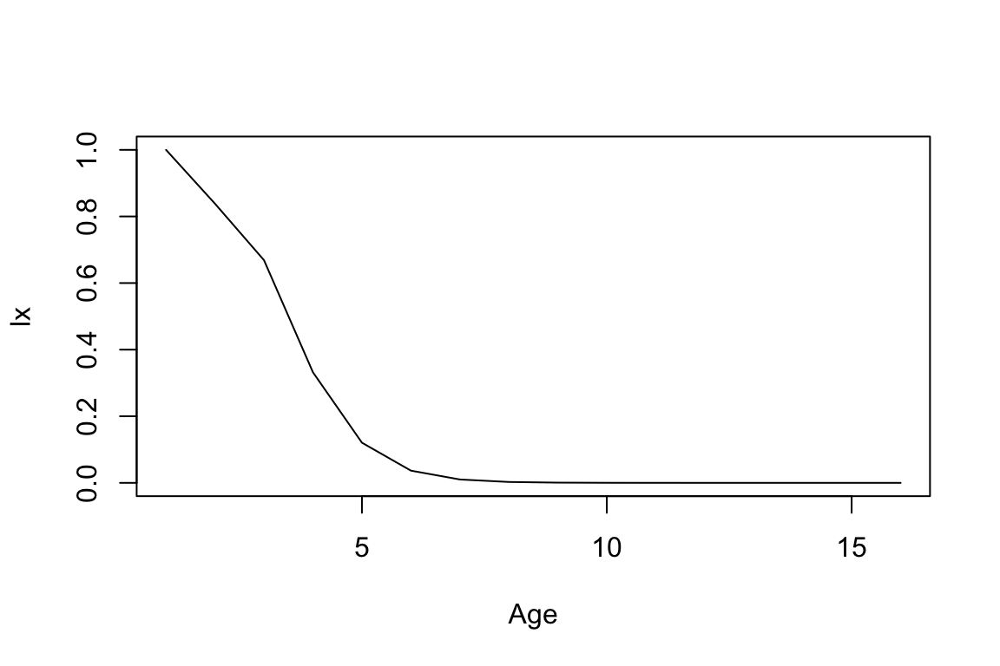
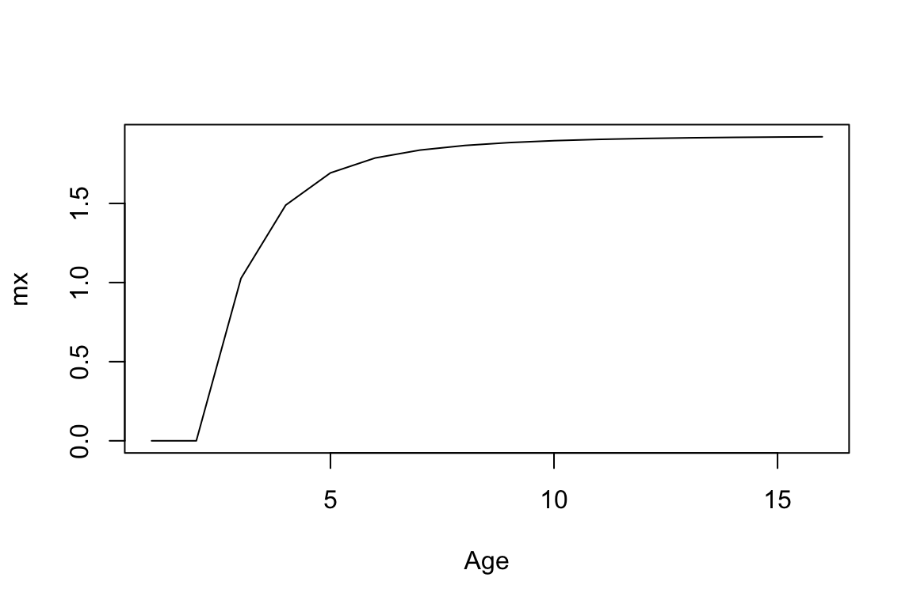
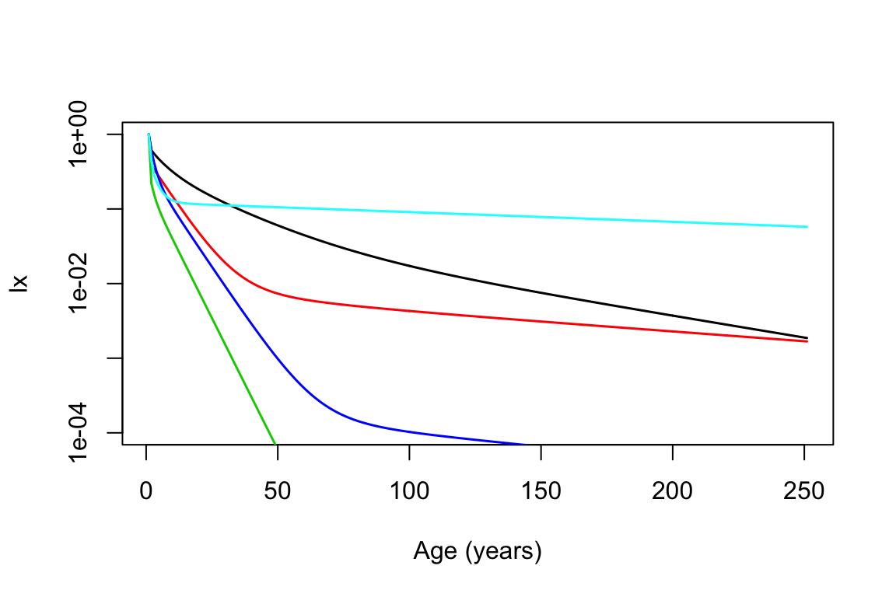

AgeFromStage.RmdRegardless of whether the stage classes of a matrix population model (MPM) are based on age, size, and/or ontogeny, it’s possible to obtain age-specific schedules of survivorship (lx) and reproduction (mx) using ‘age-from-stage’ methods, as described by Caswell (2001).
We’ll start by loading a few packages and a dataset that we’ll be using throughout this vignette. The dataset Compadre is a subset of a recent COMPADRE release that’s built into Rcompadre.
Next we’ll grab an MPM, arbitrarily selecting the fourth one in Compadre.
mpm <- Compadre$mat[[4]]
mpm
#> A compadre matrix object with 5 stages.
#>
#> MatrixClassOrganized MatrixClassAuthor
#> 1 active Small rosette
#> 2 active Medium rosette
#> 3 active Large (1 rosette)
#> 4 active Large (2 rosette)
#> 5 active Flowering
#>
#> matA:
#> 1 2 3 4 5
#> 1 0.04410 0.0238 0.00000 0.00000 1.70
#> 2 0.26245 0.1276 0.00000 0.00000 0.70
#> 3 0.41065 0.4657 0.20205 0.03335 0.15
#> 4 0.12100 0.1276 0.17520 0.06665 0.00
#> 5 0.00000 0.0838 0.37620 0.76665 0.05
#>
#> matU:
#> 1 2 3 4 5
#> 1 0.04410 0.0238 0.00000 0.00000 0.00
#> 2 0.26245 0.1276 0.00000 0.00000 0.00
#> 3 0.41065 0.4657 0.20205 0.03335 0.00
#> 4 0.12100 0.1276 0.17520 0.06665 0.00
#> 5 0.00000 0.0838 0.37620 0.76665 0.05
#>
#> matF:
#> 1 2 3 4 5
#> 1 0 0 0 0 1.70
#> 2 0 0 0 0 0.70
#> 3 0 0 0 0 0.15
#> 4 0 0 0 0 0.00
#> 5 0 0 0 0 0.00
#>
#> matC:
#> 1 2 3 4 5
#> 1 0 0 0 0 0
#> 2 0 0 0 0 0
#> 3 0 0 0 0 0
#> 4 0 0 0 0 0
#> 5 0 0 0 0 0This MPM has 5 stage class, and it’s apparent from the MatrixClassAuthor column that the stages are not based solely on age. Nonetheless, we can estimate age-schedules of survivorship and reproduction using the functions ageSpecificSurv() and ageSpecificRepro() from the library Rage.
# extract U and F matrices
mat_U <- matU(mpm)
mat_F <- matF(mpm)
# calculate lx
lx <- ageSpecificSurv(mat_U, startLife = 1, N = 15)
# calculate mx
mx <- ageSpecificRepro(mat_U, mat_F, startLife = 1, N = 15)In addition to the relevant matrix components, the ageSpecific- functions require two extra arguments. The first, startLife, is an integer indicating which stage reflects the ‘start of life’. Usually this will be 1, but sometimes we might want to skip over stages that are propagule (i.e. seed) or dormant. The MPM we selected didn’t have any such stages (see the column MatrixClassOrganized above), so we can stick with 1. The second argument, N is the number of time steps to calculate over.
Let’s take a look at the trajectories.


Now we’ll extend the basic approach above to many models. Specifically, we’ll examine trajectories of survivorship for all of the tree species in Compadre.
First, we’ll subset Compadre to our group of interest (OrganismType == "Tree"). We’ll also remove matrices with missing values, and limit our selection to matrices with a periodicity (i.e. transition interval) of 1 year.
comp_flag <- cdb_flag(Compadre, "check_NA_U")
comp_use <- subset(comp_flag, OrganismType == "Tree" &
check_NA_U == FALSE &
AnnualPeriodicity == 1)Let’s take a look at the species/populations that made the cut.
CompadreData(comp_use)[,c("SpeciesAccepted", "MatrixPopulation", "MatrixTreatment")]
#> # A tibble: 7 x 3
#> SpeciesAccepted MatrixPopulation
#> <chr> <chr>
#> 1 Phyllanthus indofischeri Biligiri Rangaswamy Temple Wildlife Sanctuary
#> 2 Phyllanthus indofischeri Biligiri Rangaswamy Temple Wildlife Sanctuary
#> 3 Castanea dentata Leelanau
#> 4 Phyllanthus emblica Biligiri Rangaswamy Temple Wildlife Sactuary
#> 5 Phyllanthus indofischeri Biligiri Rangaswamy Temple Wildlife Sanctuary
#> 6 Manilkara zapota Central Veracruz state
#> 7 Rhododendron ponticum Ockham Common Nature Reserve
#> MatrixTreatment
#> <chr>
#> 1 Fruit harvesting and no cover
#> 2 Fruit harvesting and Mistletoe cover
#> 3 Unmanipulated
#> 4 Time since last fire: 3 years
#> 5 Unmanipulated
#> 6 Unmanipulated
#> 7 UnmanipulatedNotice that there are 3 matrices for the species Phyllanthus indofischeri, reflecting different treatment groups. Let’s collapse these replicates down to a single matrix per species, by averaging the relevant MPMs using cdb_collapse(). We’ll also use the function cdb_id_stages(), to make sure we’re only collapsing matrices that have the same stage class definitions.
# add column ID-ing matrices with same MatrixClassAuthor vector
comp_use$stage_id <- cdb_id_stages(comp_use)
# collapse database to single matrix per species * MatrixClassAuthor
comp_collapse <- cdb_collapse(comp_use, "stage_id")
# check species/populations again
CompadreData(comp_collapse)[,c("SpeciesAccepted", "MatrixPopulation", "MatrixTreatment")]
#> # A tibble: 5 x 3
#> SpeciesAccepted MatrixPopulation
#> <chr> <chr>
#> 1 Phyllanthus indofischeri Biligiri Rangaswamy Temple Wildlife Sanctuary
#> 2 Castanea dentata Leelanau
#> 3 Phyllanthus emblica Biligiri Rangaswamy Temple Wildlife Sactuary
#> 4 Manilkara zapota Central Veracruz state
#> 5 Rhododendron ponticum Ockham Common Nature Reserve
#> MatrixTreatment
#> <chr>
#> 1 Fruit harvesting and no cover; Fruit harvesting and Mistletoe cover; Unm…
#> 2 Unmanipulated
#> 3 Time since last fire: 3 years
#> 4 Unmanipulated
#> 5 UnmanipulatedNext, let’s look at the organized stage classes for each MPM. If any of our MPMs include propagule or dormant stage classes, we may want to account for them when calculating lx.
MatrixClassOrganized(comp_collapse)
#> [[1]]
#> [1] "prop" "active" "active" "active" "active" "active" "active"
#>
#> [[2]]
#> [1] "active" "active" "active" "active" "active" "active" "active" "active"
#>
#> [[3]]
#> [1] "active" "active" "active" "active" "active" "active"
#>
#> [[4]]
#> [1] "active" "active" "active" "active" "active" "active" "active" "active"
#> [9] "active"
#>
#> [[5]]
#> [1] "active" "active" "active" "active"Indeed, 1 MPM incudes a propagule stage. So let’s use the function mpm_first_active() to determine the first ‘active’ stage class for each MPM, which we’ll use to define the start of life.
Finally, we’ll use mapply() to vectorize the function ageSpecificSurv() over arguments matU and startLife. By default, mapply() will return an array where the columns correspond to rows of our database, and rows correspond to ages — 0 through N. Given that the output is an array, we’ll use the function matplot() to plot age-trajectories of survivorship for each species.
lx_array <- mapply(ageSpecificSurv,
matU = matU(comp_collapse),
startLife = comp_collapse$start_life,
N = 250)
matplot(lx_array, type = "l", lty = 1, log = "y", ylim = c(0.0001, 1),
lwd = 1.5, xlab = "Age (years)", ylab = "lx")